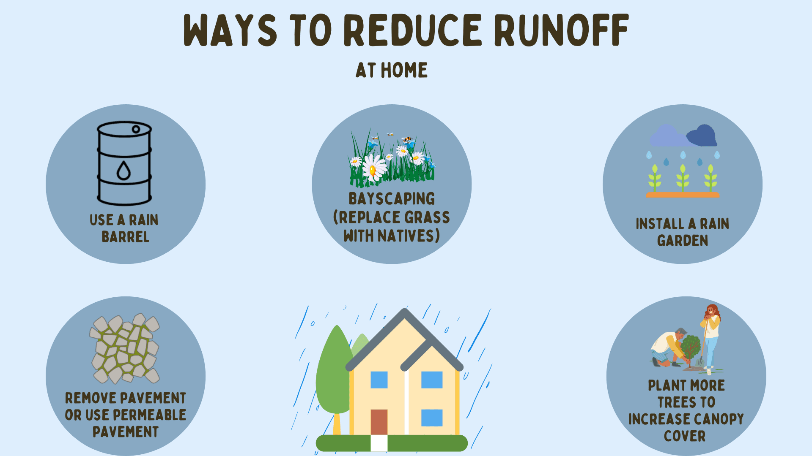
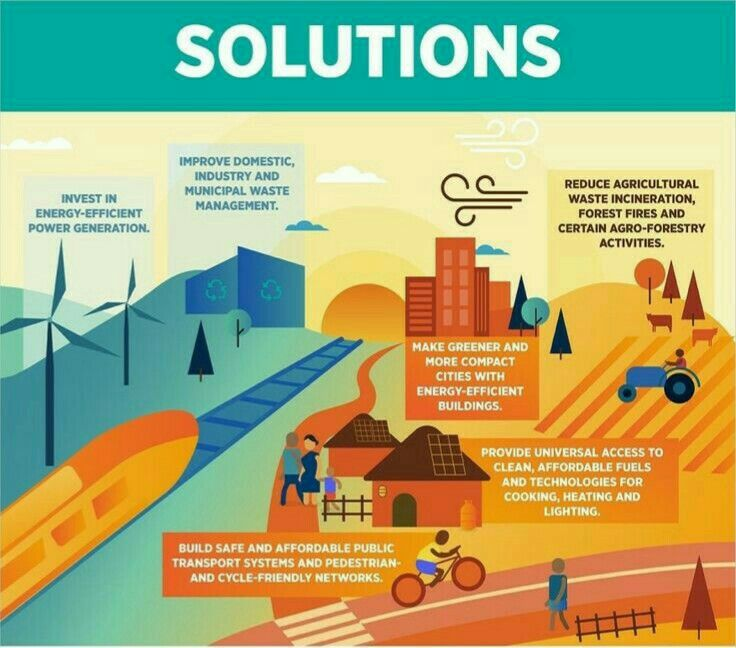

Solution to Environmental Pollution
Reduce waste, recycle, plant trees, use less plastic, conserve energy.
To reduce pollution, we can make small changes in our daily lives. First, we can use less plastic by choosing reusable bags, bottles, and containers. Recycling helps reduce waste and keeps harmful materials out of landfills. Using public transport, biking, or walking instead of driving can cut down on air pollution. Planting trees helps clean the air and provides homes for animals. Saving water by turning off taps when not in use also helps conserve our resources. Reducing energy use by turning off lights when not needed or using energy-efficient appliances can help lower pollution too. Additionally, supporting clean energy sources like solar or wind power can reduce the burning of fossil fuels. By making these changes, we can protect our environment and help reduce pollution for future generations.
 There are many simple solutions to reduce environmental pollution. One important step is to reduce the use of plastic by using reusable bags, bottles, and containers. Recycling materials like paper, glass, and metal can also help lower waste in landfills. Using public transport, walking, or cycling instead of private vehicles can reduce air pollution. Switching to clean energy sources such as solar and wind also helps protect the environment. Planting trees is another natural way to clean the air, as trees absorb harmful gases and produce oxygen. People should avoid burning garbage because it releases toxic smoke into the air. Saving water and electricity by turning off taps and lights when not needed also reduces pollution. Using eco-friendly, biodegradable products and taking part in local clean-up efforts can keep our surroundings clean. Lastly, it is important to follow environmental laws and support efforts to protect nature. These simple actions, if done by many people, can greatly reduce pollution and create a cleaner, healthier planet.